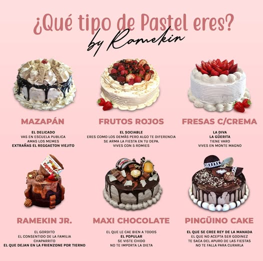
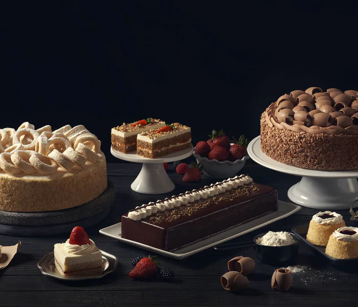
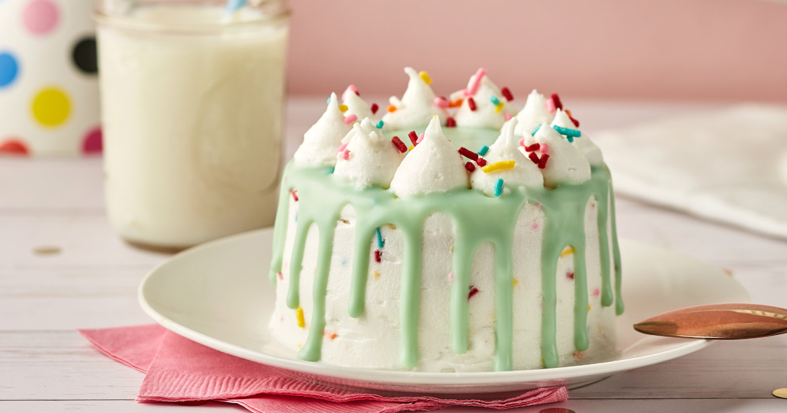

PASTELES
PASTELES Y TIPOS
El pastel es un postre elaborado a base de harina, huevos, azúcar y otros ingredientes que varían según el tipo. Su historia se remonta a la antigüedad, cuando las civilizaciones egipcias y romanas preparaban versiones primitivas de estos dulces. Con el tiempo, las recetas se han perfeccionado, dando lugar a una gran variedad de pasteles en todo el mundo.

Tipos de Pasteles Existen numerosos tipos de pasteles, clasificados según su método de preparación, textura e ingredientes. A. Según su Textura Pasteles Esponjosos Se caracterizan por su ligereza y aireado interior debido a la incorporación de aire en la mezcla. Ejemplo: Bizcocho Genovés, Angel Food Cake. Pasteles Húmedos y Densos Contienen mayor cantidad de grasa o ingredientes líquidos, lo que los hace más compactos y jugosos. Ejemplo: Pastel de zanahoria, Red Velvet. Pasteles Cremosos Tienen una base de queso crema o ingredientes lácteos, con una textura suave y densa. Ejemplo: Cheesecake. B. Según su Método de Cocción Horneados Se preparan en el horno, lo que les da una textura firme y esponjosa. Ejemplo: Pastel de chocolate, Tres leches. Sin Hornear Se elaboran con ingredientes que cuajan en frío, generalmente en refrigeración. Ejemplo: Cheesecake frío, Tarta de galletas.

Según su Origen o Cultura Pasteles Clásicos Europeos Tarta Sacher (Austria): Pastel de chocolate con mermelada de albaricoque. Tiramisú (Italia): Postre a base de mascarpone, café y bizcochos. Victoria Sponge (Reino Unido): Bizcocho ligero relleno de crema y mermelada. Pasteles Latinoamericanos Tres Leches (México y América Latina): Pastel empapado en tres tipos de leche. Chocotorta (Argentina): Galletas de chocolate con capas de dulce de leche y crema. Quesillo (Venezuela): Similar a un flan, elaborado con leche condensada y caramelo. Pasteles Asiáticos Mochi Cake (Japón): Pastel elaborado con harina de arroz glutinoso. Castella (Japón): Bizcocho de origen portugués adaptado en la cultura japonesa. Conclusión Los pasteles han evolucionado a lo largo de la historia y han sido adaptados a las diferentes culturas y gustos. Su versatilidad en ingredientes y métodos de preparación los hace un elemento clave en la gastronomía mundial.

Pagina creada por:
GARCIA TREJO REGINA ZOE y ANGELICA MITCHELLE LESSIEUR PEREZ 6.03